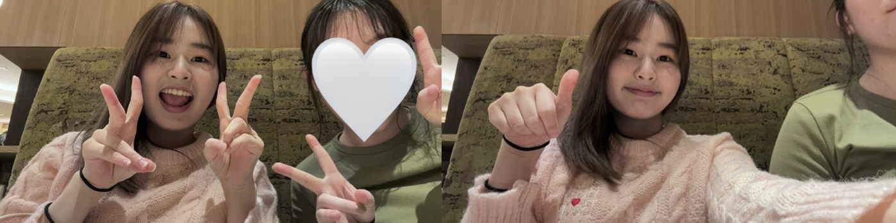
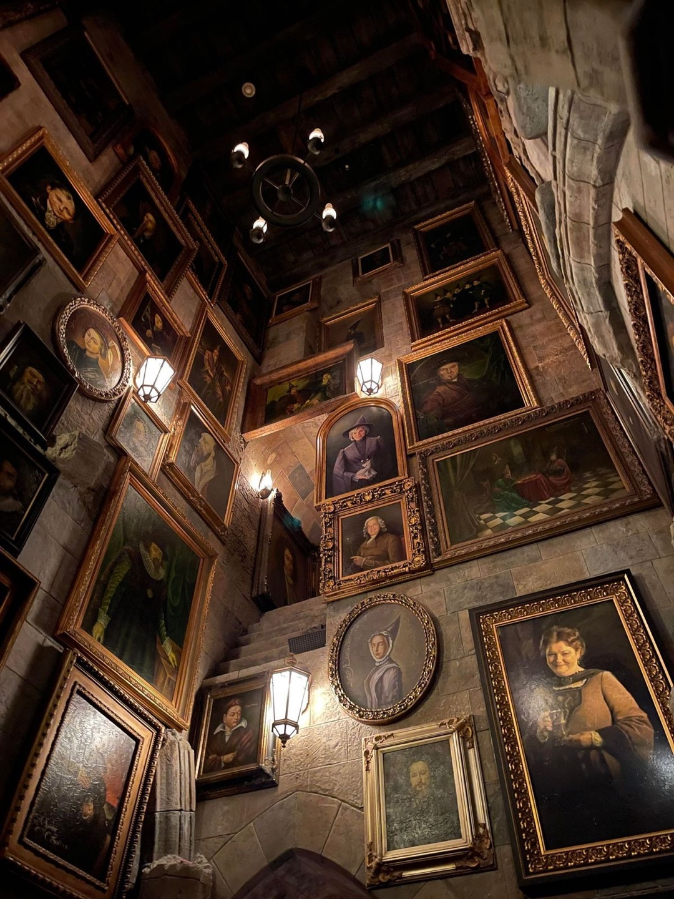

안녕하세용 국민대 기계공 24학번 이효인 입니다. 제 mbti는 하고 싶은게 너~무 많은, 모험을 즐기는 사업가형 estp 입니다 !
저는 해리포터를 참 좋아하는데요, 그 이유는 제가 가장 아끼는 제 장점인 '용기'를 제게 선물해준 책이기 때문이에요.
저는 도전하는걸 즐기고 사람을 좋아하는 제 성격을 참 자랑스러워합니다 !!
여러분도 가장 예쁘다고 생각되는 여러분의 구석이 있으시죠 ?? 저랑 친해지면 저에게도 꼭 자랑해주세요 ㅎㅎ
제가 가장 중요하게 생각하는 두 가지 가치 중 첫번째는 '낭만' 이에요.
마음속에 '낭만'을 품고 살면 세상을 더 아름답고 올바른 방법으로 살려고 노력하게 되는 것 같아요 ! 많은 사람들이 여행, 드라마, 영화 등을 좋아하는 이유도 그 때문이겠죠 ?
올해 초 친구들과 여행을 갔던 순간이 너무 낭만적이었어서 제 귀여운 캐리어 네임텍을 낭만의 배경으로 해봤습니다~~ 국민대에서의 하루하루도 낭만 가득했으면 좋겠습니당 :)
제가 가장 중요하게 생각하는 두 가지 가치 중 두번째는 '배움' 이에요.
배움에는 끝이 없다고 하죠 ?! 꼭 지식적인게 아니어도 무언가를 배우는 일은 참 보람찬거 같아요.
모르는걸 알기 위해서는 항상 노력이 필요하지만 그 노력만큼 귀한게 없다고 생각합니다~~ 또 배움을 포기하는 것 만큼 아쉬운 일도 없다고 생각해요,,
멋쟁이사자처럼 활동도 '배움'이 가득한 시간이었으면 좋겠습니다 !